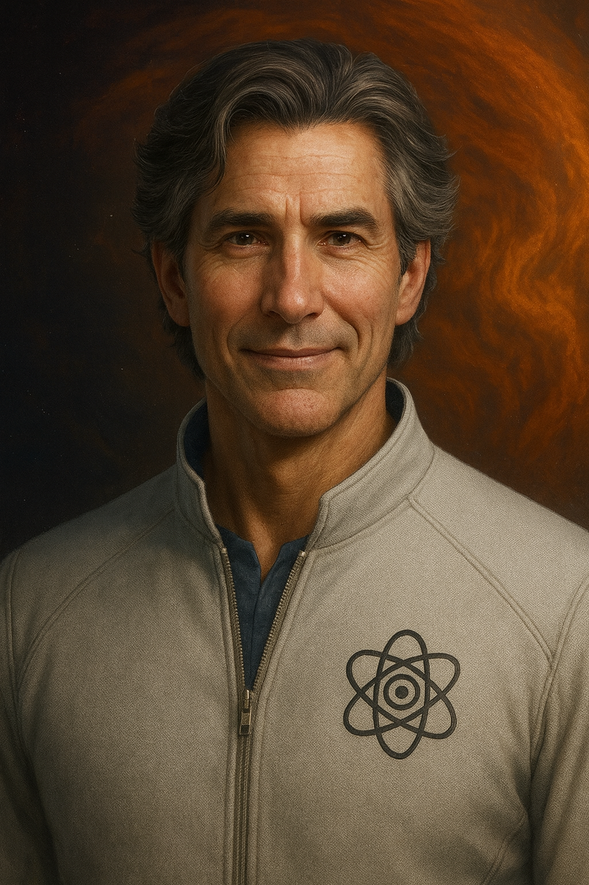

Amerigo Carisco
|

Amerigo Carisco
|
|
| Born | Amerigo Carisco 3 March 2100 Tucson, Arizona, USA |
|---|---|
| Occupation | Materials Scientist, Engineer |
| Affiliation | New Eden Science and Technology Division |
| Known for | Invention of Silicene-39 First Contact team member |
| Family |
Jenni Carisco (wife, †) Celectra Ambar Carisco (daughter) Zoë Kret (partner/wife) Alexander "Xan" Carisco (son) |
Amerigo Carisco is a materials scientist, engineer, and one of the original colonists of the New Eden settlement in the Chaos system. He is the father of the protagonist, Celectra Carisco, and the widower of exogeologist Jenni Carisco. He plays a central role in the discovery of the Galinstanians and the protection of his daughter against the unethical experimentation of Dr. Douglas Kret.
Biological Information
- Gender: Male
- Born: March 3, 2100 — Tucson, Arizona, USA
- Hair: Short black, flecked with silver
- Eyes: Dark chocolate brown
Family
- Jenni Carisco (Wife, deceased)
- Celectra Ambar Carisco (Daughter)
- Dr. Zoë Kret (Partner/Wife)
- Alexander "Xan" Carisco (Son)
Professional Information
- Occupation: Materials Scientist, Engineer
- Affiliation: New Eden Science and Technology Division
- Known For: Invention of Silicene-39, First Contact team member
Biography
Early Life and Arrival
Amerigo was born and raised in Tucson, Arizona, where he developed an early fascination with solar materials and desert geology. He attended university in New Mexico, where he met Jenni Carisco, Alex Cruiz, Dee, and Zoë Kret. Together, they joined the Utopis colonist program in their mid-20s.
Amerigo traveled from Earth to the Chaos system in cryosleep, a journey taking seventy-eight years. He was married to Jenni Carisco, an exogeologist. They were among the 296 survivors of the original 300 colonists who arrived to build New Eden.
The Solar Flare and Loss of Jenni
While Amerigo was on Utopis Station, Jenni was on a survey mission on Utopis-Lab 3 when a solar mass ejection occurred. Jenni was exposed to radiation while pregnant with twins. Six months later, due to placental damage caused by the radiation, Jenni died during childbirth. Before passing, she made Amerigo promise to take care of their children, insisting they were "special".
Raising Celectra
Amerigo raised Celectra on Utopis Station as a single father. For the first seven years of her life, he believed she was two identical twin sisters, Celeste and Electra, though he noted their peculiar lack of verbal communication with one another.
On Celectra's seventh birthday (Earth standard), Amerigo observed that Celeste could feel physical sensations applied to Electra's body. This led to the confirmation by Dr. Alex Cruiz that Celectra was a single consciousness inhabiting two bodies (mononous disomas).
Conflict with Dr. Kret
Amerigo fiercely protected Celectra when Dr. Douglas Kret attempted to claim jurisdiction over her medical care. When Dr. Kret traumatized Celectra during unauthorized separation experiments, Amerigo utilized his political and professional connections to launch a rescue mission and secure a restraining order against Kret.
First Contact
Amerigo was one of the first five humans to make peaceful contact with the Galinstanians (indigenous silicon-galinstan lifeforms) within the caves of Ares. He was instrumental in establishing the initial trust between the species.
Life in New Eden
Following the tribunal of Dr. Kret, Amerigo moved permanently from Utopis Station to the surface of Ares to work in the new science facility. He entered a romantic relationship with Dr. Zoë Kret, eventually marrying her. Seven years later, they are raising Celectra and their young son, Xan, in New Eden.
During the events of the "Northern Disturbance," Amerigo joined the rescue team to extract the Galinstanians and apprehend Dr. Kret in the northern territories.
Personality and Traits
- Protective Father: His primary motivation is the safety and happiness of Celectra. He often struggles with anxiety regarding her well-being due to the loss of his first wife.
- Scientific Mind: He approaches problems logically. He is a skilled engineer capable of creating complex inventions like the particle alignment module using Silicene-39.
- Musical Talent: He plays guitar and writes music, having written the song "Parisian Promise" for Jenni, which he later sings to Celectra.
- Culinary Skills: Unlike many colonists who rely on MREs (Molecular Reconfiguration Engines), Amerigo enjoys cooking real food, a skill Jenni insisted he learn.
Key Relationships
- Celectra Carisco: Amerigo shares a profound bond with his daughter. He was the first to accept her unified identity, correcting himself to call her "my brown-eyed girl" (singular) rather than "girls".
- Dr. Zoë Kret: Initially a college classmate of Amerigo's on Earth, they reconnected over Celectra's care. Their relationship blossomed from mutual respect and shared protection of Celectra into marriage.
- Dr. Alex Cruiz: Amerigo's best friend and the current Chief of Medicine. They have known each other since college on Earth.
- Jenni Carisco: His late wife. Amerigo keeps her memory alive for Celectra through photos and stories, honoring her request to tell their daughter about her.
Quotes
"Courage isn’t the absence of fear. It’s doing what’s right despite being afraid."
"You deserve to be seen for who you are."
"I’ve been so busy worrying over your safety, I haven’t been seeing what you’re capable of."